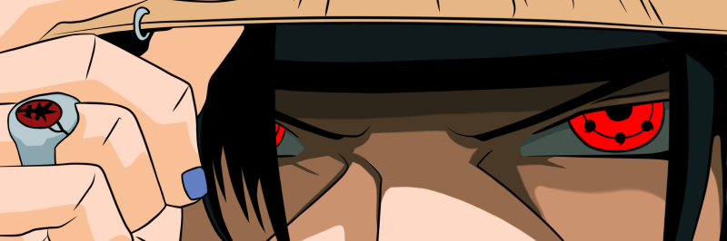
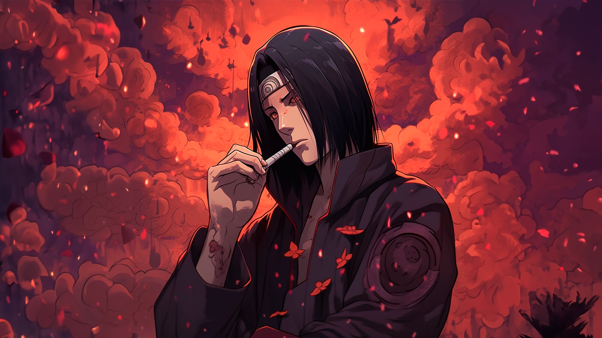

História ITACHI
Itachi Uchiha うちはイタチ, foi um prodígio do clã Uchiha de Konohagakure. Ele se tornou um criminoso internacional depois de assassinar seu clã inteiro, poupando apenas a vida de seu irmão mais novo, Sasuke. Ele se juntou a organização criminosa Akatsuki, onde ele entrou em frequentes conflitos com Konoha e seus ninjas, incluindo Sasuke, que procurou vingar sua família. Depois de morrer durante uma batalha contra Sasuke, as motivações de Itachi foram reveladas serem mais complicadas do que pareciam, uma vez que seu clã tramava um golpe de estado contra Konoha que traria guerra à aldeia. No fim, Itachi desejava proteger a sua vila e seu irmão, permanecendo um shinobi leal a Konohagakure até o fim.
SHARINGAN
O Sharingan (literalmente significa: "Olho Copiador Giratório") é uma kekkei genkai que se manifesta em alguns membros do clã Uchiha através de um dōjutsu.Apesar de seus poderes terem sido vistos pela primeira vez em Kaguya Ōtsutsuki, através do Rinne Sharingan, sua verdadeira forma se manifestou pela primeira vez em Indra Ōtsutsuki, o ancestral mais antigo do clã Uchiha — embora, no anime, tenha se manifestado antes com Hagoromo Ōtsutsuki. Mais tarde, o Sharingan veio a ser considerado como um dos "Três Grandes Dōjutsu",juntamente com o Byakugan e o Rinnegan. Sharingan HistoriaFotos
CLÃ
O clã Uchiha うちは一族, foi um dos vários clãs excepcionais de Konohagakure, e também tinha fama de ser o clã mais poderoso da vila, produzindo shinobi que foram excepcionalmente talentosos e orientados para batalha. Juntamente com o clã Senju, eles fundaram Konohagakure, mas agora está quase extinto após os eventos do massacre do clã. Ele foi liderado por Tajima Uchiha, Madara Uchiha e Fugaku Uchiha. Historia completa.

Por seu próprio designe, Itachi teve uma profunda influência na vida de Sasuke. Suas instruções na noite do Massacre do clã Uchiha para Sasuke ganhar poder a qualquer custo fez Sasuke se isolar de outras pessoas e evitar o companheirismo.
Itachi foi mostrado por ser analítico e perspicaz, podendo deduzir o funcionamento e as fraquezas de poderosas técnicas, mesmo sob pressão. Ele orquestrou sua batalha contra Sasuke para conseguir seus resultados desejados, e até mesmo fez um plano reserva caso seu plano original falhasse, selando o seu poder em Sasuke e colocando um corvo especial dentro de Naruto Uzumaki. Caso Tobi entrasse em contato com Sasuke, ele transcreveu o Amaterasu nos olhos de Sasuke em uma tentativa de matar Tobi quando sua guarda estivesse baixa. Isso levou o homem mascarado notar que se ele não tivesse mantido alguns segredos de Itachi, ele teria morrido em sua última armadilha.